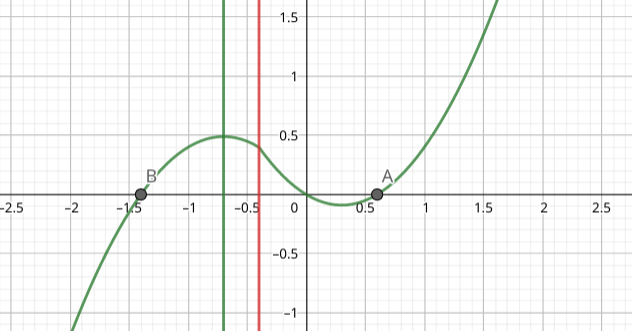

数学题目汇编
记录一些我觉得值得一做的有趣的题目。
2020 高级高二上期末导数压轴
#高考/数学/导数/指对同构#已知 ，当 时， 恒成立，求最小的 值。
首先对不等式进行变换：
令 ，原式化为：
求导发现 在 上单调递增，原式等价于：
不难化为：
求 的最小值，对不等式稍作变换：
令 ，在 上单调递增， 上单调递减， 的最小值取到 即可保证原式恒成立。
本题的核心在于双变量化单变量，将 和 统一为 后构造函数求解。
同时，将不等式两边分理出 与 ，然后构造函数的方法，叫做
2020 湖北模拟导数压轴
#高考/数学/导数/指对同构# 已知 为函数 的零点，求 .
同时出现指数与对数，考虑指对同构。
利用单调性求解即可。
16.2021 广一模压轴
#高考/数学/导数/合一法# #高考/数学/导数/端点分析# #高考/数学/均值不等式# 已知 ，若 有两个零点 且 ，证明：
双变量问题，考虑极值点偏移或合一法。个人倾向使用合一法。 平方平均，可以用均值不等式转化：，这样形式就简单许多，看起上去比较可做了。 再转化一步， ，那么解一个关于 的不等式即可。
设 ，显然有 . 接下来的任务就是得到 关于 的式子，也就是要将 转化为仅与 有关的式子。
再将原不等式转化为关于 的形式：
可以发现这是很凑巧的，接下来构造函数对 求导，再求函数最小值就可以了。
我们知道 ，而当 时恰好为零，那么导数可能恒大于零。
证明 即可，通过估算证明，这里不再赘述。
河南省名校联盟 2021-2021 学年高三 4 月联考
#高考/数学/导数/合一法# #高考/数学/导数/端点分析# 设函数 有两个不等的零点 ，且 ，若不等式 恒成立，求正实数 的取值范围。
双变量问题，考虑极值点偏移或者合一法。
此时有两条路走：整体分析或者参变分离。后者比较简单，但需要用到洛必达法则。因此此处使用整体分析。
此处得到的是必要条件，带回验证即可。
另，当且仅当 时有 ，由 知 恒成立。
故 为充要条件。
导数压轴数列放缩
#高考/数学/导数/不等式# 若 ，讨论 单调性，并证明不等式： 证明：考虑使用第一问结论进行放缩，进行一定的构造。
4.小题巧解变化主元
#高考/数学/代数/变化主元#不等式 对满足 的一切实数 都成立，求 范围。
乍一看，似乎我们可以参变分离，讨论 的正负性，然后结合 的范围求解。
但实际上有更好的做法。
变换主元，对 视作主元，变形得到 对 成立。 一次函数，取两端点检验即可。
二者取交集，得到
这种命题其实利用了我们对 作为自变量的思维惯性。
如果把题目改写为 对 恒成立，求 范围，相信大家都很容易想到做法。
小题巧解数列函数
#高考/数学/数列/函数#设数列 满足 ，且 ，证明
有趣的是，这题虽然很容易看出 是个等比数列，但实际上根本不需要求出 的具体表达式。 显然有 ，由欲证不等式变形有： 这两个式子在 都恒成立，求导证明即可。
小题巧解向量几何法
#高考/数学/向量# 设向量 满足 ，，，求 最大值。
显然有 ，画出图像。
可以发现一个四点共圆结构，则最大值即为直径。 可以利用正弦定理求直径，，则
小题巧解极化恒等式
#高考/数学/向量#已知圆 ，若 为圆 的任意一条直径，且 ，则圆 半径为？
考虑极化恒等式，，解得
小题巧解解析几何几何法
#高考/数学/解析几何# 圆 ，若圆 存在以 为中点的弦 ，且 ，则实数 的取值范围是？
由中线长公式有 ，化简得到 ，即
也就是圆上存在点 ，考虑过 点作圆的两条切线，记切点为 ，有 ，转化为 ，显然 为定值，只需要对应求解 范围即可。
解得
小题巧解几何法
#高考/数学/解析几何#圆 ，，，对于圆上任意一点 ，始终有 为锐角，求 的取值范围。
可以发现 为定值，则以 为直径画圆，要求 点始终在圆外，据此可以求出圆心位置限制。
解得
5.小题巧解构造点到直线距离
#高考/数学/三角函数# 函数 的值域？
这个式子看上去就非常的令人畏惧。
不妨考虑 ，则
那么 对于 ，我们可以看作单位圆上一点 到点 的斜率。此时需要注意到，要求 . 那么 最小值为 ，当 时取到，最大值为 ，当 时取到。 则 ，则 ，注意这里要考虑 到底是否可行，因为取倒数时我们忽略了这种情况。不难发现其实 对应的就是 的情况。 那么 ，考虑到 恒成立，因此 恒成立，则
这样做整体思路上比较常规，比较关键的步骤是对分母进行配方，以及运用数形结合思想处理 .
考虑点到直线距离公式， 构造 ，则 表示 到该直线的距离的相反数。
根据我的第一感觉，该直线是不能任意取值的。因此需要尝试着求一下。 得到 ，这个结构再次出现，考虑为 到点 的斜率的相反数，注意 ，则 求出直线斜率范围后，可以发现 表示直线到 的距离的相反数，那么其实是关于 轴对称的，因此无需过多考虑。
最小距离就是 ，最大距离就是 了，，中间的所有值也都能取到。
此方法核心为数形结合， 需要观察出原式点到直线距离公式的代数结构。
有一个需要注意的点是求直线的范围，虽然两端的极端情况很容易求出，但值域能否连续依然需要考虑。
云里雾里阴间函数大题
#高考/数学/函数#设关于 的方程 有两个实数根 ，且 ，已知函数 求 的值。 判断 在 区间上的单调性。 若 是正实数，证明不等式
比较阴间的题目，需要高超的观察技巧。
首先韦达定理有 . ，接下来由 消元，得到 则同理 ，相加和为
暴力求导， 由于 为两零点，则 对 恒成立，则 成立，单调递增。
看起来就很恐怖的式子。
那么：， 则
再由第一问，， 则
小题巧解解析几何几何法
#高考/数学/解析几何#已知椭圆 ，点 ，过 作两条相互垂直的直线 ， 为椭圆上任意一点，记点 到 的距离为 ，则 的最大值为？
答案既然直接用点到直线距离公式，实在是白瞎了几何性质，徒增计算量。
考虑到三个角都是直角，那么画出来的图形是矩形，不难发现 ，然后爱怎么算怎么算。 最大值为
1.阴间小题解析几何
#高考/数学/解析几何#设 为椭圆 的右焦点，不垂直于 轴且不过点 的直线 与 交于 两点，在 中，若 的外角的角平分线与直线 交于点 ，则 点的横坐标为？
有相当难度的题目。如果我们直接从解析入手，发现要求角平分线的直线方程，这是相当困难的。 当然可以用直线参数方程试图解决，但依然非常棘手。如果考场上遇到，特殊值是更经济的做法。
可以做一条辅助线， 与 平行，不难推导出 ，也就是等腰。
借助平行线分线段，我们可以得到 ，而根据圆锥曲线的焦半径公式，我们有 ，联立就可以轻松地解出 了。
最后 ，代入 得到
6.小题巧解极化恒等式
#高考/数学/解析几何#设 分别为椭圆 的左右焦点， 是椭圆上任意一点，若使得 成立的点恰好有 个，则 的取值范围？
先讲常规做法。
设 ，， 不难得到 ，利用椭圆方程代换消元即可得到 考虑到如果要有四个点， ，则
事实上，常规做法也足够简单了。
用极化恒等式可以很快地解决这个问题。
，显然 ，则要有四个点能取到，只需要避免长短轴端点，故 .
利用极化恒等式，将向量相乘转化为线段长的平方相减，而某一条线段长为定值，则可直接转化为某条线段的长度。
补充极化恒等式的常用结论： 中， 为 中点，则 证明只需要将向量拆开。 更一般地：
2.小学几何题
正六边形 ，如图已知面积，求正六边形面积。
答案：. 这是一道小学题、、、Source
首先需要推导一个引理：正六边形对三角形面积和为正六边形面积的 ，通过对三角形高一定很容易推导。 然后需要另一个引理：正六边形中，不相邻的三个三角形的面积和为正六边形面积的 要证明这个引理，考虑正六边形面积为 ，三个三角形的底都是 ，则证明其高的和为 即证 ，等边三角形任意点到三条边的垂线长之和等于边长的 倍。 可以使用等面积法，，解得 ，证毕。 设 ，有 ，解得 ....
出在高考卷上，多半屠杀一片考生。
3.常规压轴导数大题巧解同构
#高考/数学/导数/指对同构# #高考/数学/导数/端点分析# ， 当 时，求 极值。若 恒成立，求 的取值范围。
，当 时， ，则 在 上单调递增，在 上单调递减， 则 恒成立， 在 上单调递减，无极大、极小值。
考虑简化对数系数，由 ，可以转化为 恒成立。 不难发现， 越小时，原式越容易成立。 具体地，如果 成立，则假设 ，可以得到 如果我们能找出使其恰好成立的 值，就能直接得到 的范围。
令 ，，可以发现 恒成立。 同时，在原式中有 ，可以得到必要条件为 令 ，求导得到 ，，且 可以发现如果 ，这就是经典的端点效应，那么只需要证明 时成立即可。
对 求导，得到 ，当 时，，显然 单调递增。 对于 ， 单调递增，
对于 ，由于 单调递增，，则此时 ，说明 在 上单调递减，且 ，则此时 ，则此时 单调递增，由 ，那么此时 ，显然 的正负性与 相同，那么此时 ， 单调递减，
综上所述， 是必要条件， 时原式成立，且已经证明若 成立，则 同样成立，故 是充分条件， 则 为原不等式成立的充要条件， 的值域为
这个方法思路比较常规，且直观简单，出发点是「对数单身狗」，而需要观察的点是找到 的端点效应，进行必要性探路。感觉这样写应该没有太大的问题，只是步骤繁琐，需要求很多次导。
还有一种比较有技巧性的做法。
指对分离， 处理出同构形式：
直接换元，令 ，不难求出 ，原不等式转化为 恒成立。
这里可以直接参变分离，因为 ，不会出现需要用到洛必达定理的情况。
，令 ，，，则
综上所述，
这个方法的巧妙之处在于利用同构换元简化了大量计算，，而又通过简单的参变分离直接获得答案。
在讨论 的范围时，需要涉及到 时 的取值，不过这种 型应该不至于成为扣分点。
，考虑到 ，则 ，则 令 ，，有 ，则 恒成立，故 在 上单调递减，在 上单调递增，，因此
这大概是最常规的做法，常规到我非常怀疑它能不能做出来、、、
当然最后是能很方便地解出来。一般遇到指数、对数在同一个分式里的情况，不宜硬上、、、然而这里通过整理配凑出 的恒等式结构，从而降低了对导函数进行研究的难度。
双曲线小题
#高考/数学/解析几何#
设双曲线 的两条渐近线的夹角为 ，且 ，则离心率为？
这题的有趣之处在于，确定夹角指的是哪个角。两条直线夹角，指的是夹出的最小正角。 我们知道渐近线 ，而 ，那么其倾斜角 ，自然就有 已知 ，求 是很简单的。，解得
解到这一步就够了，，则
12.双曲线小题
#高考/数学/解析几何#
已知双曲线 过点 且渐近线方程为 ，求双曲线 的标准方程。
按照常规做法，需要讨论焦点在 轴上还是 轴上。
这里提供一种更有趣的做法。 对于双曲线 ，其渐近线方程为 ，平方后得到 ，即 . 对于 ，其渐近线方程为 ，同样有
也就是说，对于任意双曲线标准方程，只要将等号右侧的 变成 ，退化为两条直线，所得的就是双曲线的两条渐近线。
同样可以利用渐近线设出双曲线的方程。 回到题目，，此处的 ，可正可负。 代入点 直接解得 ，则双曲线方程为
这种做法利用了一个双曲线渐近线的小结论，可以避免分类讨论的心智负担，也不用太担心丢失某一种情况。
18.阴间双曲线小题
#高考/数学/解析几何#
Source：2021 湖北十一校联考(一)
已知 为双曲线 的左右焦点， 的离心率 ，过 的直线与双曲线右支交于 两点， 在第一象限， 分别为 的内心，则 的取值范围是？(用只含 的式子表达)
首先有一个关于双曲线焦点三角形内心的性质：内心在 上。 证明的话，设 ，则 ，由内心性质，，而 ，同时 ，则 ，解得 ，则
知道这个性质之后呢？现在可以确定 是一条在 上的线段，但对其长度范围，依然没有清晰认知。 但可以发现：，而 ，这启示我们可以将角度作为自变量。
设直线 的倾斜角为 ，则 ，同时
而 ，只需要求后面这个式子的范围。
则 ，当 时取等号。
而还需要注意，为了使直线有两个交点， 是必须的。 由题目知，，则 ，也就是说 不难看出 ，则 ， 代入两个端点，发现
题目要求全部用 表示，则利用离心率转化，，. 综上所述，
本题考查了对双曲线几何性质的运用、对三角恒等变换的掌握，还有用角度作为自变量的意识，确定自变量范围的能力，求对勾函数值域的能力，是一道综合性很强的题目。
要是第一步不知道内心恒在 上恐怕会比较难办。
补充一下， ，这样变换可以方便一些。
小题双曲线第三定义
#高考/数学/解析几何#
已知双曲线 的离心率为 ， 为双曲线上关于原点对称的两点， 为双曲线上另一动点，直线 的斜率分别为 ，若 ，求 范围。
由双曲线第三定义，，则直接解出对应 .
常规做法实质上应该就是证明了一遍第三定义。那么如何证明第三定义呢？ 其实只需要通过圆锥曲线方程，直接代换消元就能证明。
双曲线第三定义证明： 取 ，则 ，且有 对于双曲线上任意一点 有 ，，则 考虑统一消去 ，由椭圆方程有 ，则
不难证明椭圆也同样成立，只需要注意在椭圆中 .
这样直接考第三定义的题真是少见啊。
15.小题双曲线
双曲线中心为 ， 为双曲线虚轴的上下端点， 为双曲线的左顶点， 为双曲线的左焦点，直线 与 相交于点 ，若双曲线离心率为 ，求
图画得不标准，凑合看看。
由题意有，，，，
考虑到 ，可以得到
由此得到一个粗浅的想法：求出 与 ，然后算出
不难发现，，，而 解得 ，则已知 ，求 令 ， ，解得 ，则 ，这里利用 排除了钝角的情况。
这是比较常规的解三角形方法，计算量中规中矩，思路直接简单。
其实考虑到已知离心率，直接令 为单位 ，那么一切都是已知的。
其实归根结底，我们已知两条直线的倾斜角，想要求出其夹角的余弦值。
那么可以考虑使用向量法，向量点乘：
，
，
则 ，代入数据得到
这个方法通过向量点乘，避免了从 到 的转变，从而简化了一定的计算量。
已知两直线的方向向量，求夹角余弦值，可考虑向量法。
7.2021 全国一卷圆锥曲线
昨日有大师指出我选的题目并非高考之流、、、那今天我们来做一道格局大一点的高考真题、、、
顺便补充一下，选题都出自本人平时的练习，由于本人没有真题洁癖，来者不拒、、、有的题型确实不考，训练的目的也仅仅是了解思想方法、技巧，各位读者自行斟酌、、、
一般来说，本人选题有两种倾向：难度高，本人没有做出的，以及有某些富有启发性的做法的、、 请各位读者务必掌握常规做法，补充的做法可以当乐子看看、、、
已知 ，，点 满足 ，记 的轨迹方程为 ，求 的方程。 设 在直线 上，过点 的两条直线分别交 于 两点和 两点，且 ，求直线 与直线 斜率之和。
、、、当时刚考完学水，学校就把这玩意儿当作业布置下来了。
方程：，稍微注意一下只有半边。
先设出 ，，由弦长公式有：
似乎需要讨论斜率不存在的情况，但其实考虑到 就能发现斜率不存在是不可能的，不过斜率确乎是有范围的。
不妨直接拆开，得到： 然后准备开始联立吧，设 ， 代入双曲线方程： 整理一下： 上韦达定理：， 看起来乱七八糟，总之代入就是了。
前途非常光明。
那么：，考虑到 ，直接消去。
这一步还有一个细节，，这个大概是从有两个交点的斜率限制角度考虑的。 接下来随便展开一下就可以了。
最后 ，由于 ，那么
这是最常规的做法，有一定的计算量，但难度不大。
接下来介绍一种「高考不会考」的思路。
，则 四点共圆。 则由圆锥曲线四点共圆的结论知， 了解更多，可以查看 【解析几何】圆锥曲线中四点共圆的优美性质
请不要在考场上直接使用二级结论、、、是否可以使用参数方程证明该结论，以你的数学老师为准。
小题抛物线弦长公式
已知抛物线 焦点为 ，准线为 ， 为 上一点，直线 与抛物线交于 两点，若 ，求
这其实是很常规的一道题，只是引入一下抛物线弦长公式。
不难得到 ，而由抛物线几何性质，可以得到直线倾斜角 .
按照常规做法，再求弦长，只需要简单的联立计算就可以了，这里不再赘述。
而根据
小题抛物线弦长公式
Source: 2020 新高考 I 卷
斜率为 的直线过抛物线 的焦点，且与 交于 两点，求
、、、弦长公式光速解题，
这样赤裸裸求焦点弦长的题真是少见了、、、
21.抛物线相切面积最大值
抛物线 的焦点为 ，过 且倾斜角为 的直线 与抛物线交于 两点，点 为抛物线 上的动点，且 在 的右下方，则 面积最大值为？
在抛物线中，面积最大值往往转化为求切线。 有趣的是，在这类命题中，一般都会给出 的抛物线方程，因为大家只会对 求导、、、？
这题也不例外，不难得出 ，然后用你喜欢的方法算出 接着对抛物线求导得到 ，当 时相切，解得切点 ，用点到直线距离公式计算高得到 ，则面积最大值为
见一见这种题型？忘记第一次是在哪里看到的了。兴许不是很热门罢、、、
抛物线中点到准线距离
抛物线 的焦点为 ，斜率为 的直线 过点 ，与抛物线 交于 两点，则 中点到准线的距离为？
简单的计算就能解决，只是结论比较有意思。 常规做法：设 ，代入联立有 ，则 ，则 做法二：背诵结论 ，则换算得到 ，代入得到 ，后同。
、、、然而我们有一个公式：抛物线焦点弦长 ，惊奇地发现 中点到准线的距离恰好是弦长的一半。
这就推导出了另一个结论：抛物线的准线与以焦点弦为直径的圆相切。
如果我们知道这个结论，只需要计算焦点弦长即可。 根据焦点弦长公式的角度表示，，不难求出 ，则 ，而答案即为
圆锥曲线怎么到处都是二级结论、、、
9.抛物线焦半径公式应用
抛物线 ，过焦点的直线与抛物线交于 两点，点 在第一象限，且 ，求直线 的倾斜角。
可以得到 ，则 ，即 ，同时有 由于是焦点弦，直线与抛物线联立有 ，解得 ，，与抛物线方程联立解得 斜率 ，则倾斜角为
其实用焦半径公式可以快一些。 有 ，解得 ，则
焦半径公式：，这里的 是与 轴正方向的夹角，此题中为 .
补充一点常用结论：，过焦点的直线与抛物线联立，运用韦达定理即证。
抛物线小题
的焦点为 ，准线与 轴之间的交点为 ，点 为抛物线上异于原点的任意一点，若 的角平分线与 轴交于点 ，则 的最大值为？
由角平分线定理有 ，当 最大时， 最小，由抛物线几何性质不难发现 ，则令 最小。
欲使 最小，即令 最大，则 与抛物线相切时角度最大。联立求切线斜率即可。
解得 ，
本题考察了角平分线定理与求抛物线切线，有一定的难度。
34.阴间抛物线小题
抛物线 的焦点为 ，，且 ，且 ，若 为 的重心，且 的中点到抛物线准线的距离分别为 ，满足 ，求直线 的斜率。
首先由重心的坐标公式有：
由抛物线几何性质有：
加起来有 ，解得 ，则 ，解得 ，代入抛物线方程解得 ，这里利用题目条件 排除另一正数解。
则 ，直线斜率为
8.阴间抛物线小题
已知直线 与抛物线 相切于点 ，且与 的准线相交于点 ， 为 的焦点，连接 并延长交 于另一点 ，求 面积最小值，若 ，求 值。
这题、、、设的东西不同，计算量差异非常大！接下来先表演一下本人的错误做法、、、
抛物线切线，我们知道可以用求导做、、、我们直接大力隐函数求导得到 ，则 不妨设 ，稍微化简得到 ，写出切线方程：
代入 得到 ，然而我们要求面积，还需要计算 的坐标。
由焦点弦性质，我们有 ，有 ，不难解得
三个点的坐标都求出了，直接拿出坐标表示的三角形面积公式、、、
看起来很恐怖、、稍微整理一下。 似乎感觉到有一个神秘的结构出现了、、、 无功而返、、、神秘的结构消失了。那不妨直接展开罢、、、 面对这大玩意儿，求导恐怕很痛苦、、、但似乎我们又发现了神秘的结构、、、 这个常数出现得过于频繁、、、 不妨设 ，不难发现 接下来推导一下，，则 再凑次数， 那么 则 ，由于 ，则 ，因此
第二问若 ，勾股定理得到 ，不妨取 ，则 ，解得 当 时，，，，可以发现另一种情况就是 互换。
这个方法、、、妖魔鬼怪，纯属瞎搞，仅仅用来显示本人的愚蠢，各位读者切莫学习、、、
答案给的做法： 设 ，，，得到 ，
然后联立方程求一下切线……这里省略了。 同时抛物线在 点处方程为：，不知道为什么会想到求这个东西、、、
联立两个切线方程，得到 ，解得 同时有 ，不难得到 这两条切线的交点就是 点、、、
查了一下，这个切线交于准线上一点似乎是个结论，甚至有 这种结论、、、
了解更多请查看 https://www.cnblogs.com/li-hua/p/5560616.html
答案方法没有用到垂直， 而是直接运用点到直线距离公式底乘高求解。
直线 ， 而运用焦点弦长公式 不妨令 ，不难看出 ，则 、、、它的换元就这么显然。
可以发现，两种做法做到最后换元完毕关于 的式子都是类似的、、、
如果我们用上 的结论呢、、、 ，可以发现这个东西肯定简单不到哪里去、、、不想算了。
答案确实很高明、、、虽然我不知道为什么。
通过神奇的结论，直接将 点与 联系起来，然后点到直线距离公式处理高、坐标表示焦点弦公式处理底，确实是非常快速。
这题为什么不是大题、、、出自《小题狂练》，本书很多偏难怪题，各位慎重购买、、、
有趣圆锥曲线小题
将焦点相同、离心率互为倒数的椭圆和双曲线称为一对「相关曲线」。已知 为一对相关曲线的焦点， 是椭圆和双曲线在第一象限的交点，当 时，求这一对相关曲线中双曲线的离心率。
有点创新的味道、、、 有角度，应该是从余弦定理入手，求出两条边长。
设椭圆 ，双曲线 ，拥有共同的 ，运用椭圆、双曲线几何性质有：，解得
然后运用余弦定理，，整理得
接着发现我们还没有使用离心率互为倒数的条件，则列出式子：，代入上式得到 不难发现 ，因此 ，代回 即可解得双曲线离心率为
概念新鲜，但只要抓住核心条件进行研究，综合应用椭圆与双曲线的几何性质，配合余弦定理，不难求解。
我们有焦点三角形面积公式、、、这也是与 有关的式子。 在椭圆中，有 ，在双曲线中有 ，不难解得
由离心率互为倒数，，则 ，又回到了 ，剩下略。
、、、可以发现这个方法并没有什么优越性，反而要费力气用上关于 的关系式。
10.多给条件的圆锥曲线小题
已知椭圆 的右焦点 是抛物线 的焦点，过 作倾斜角为 的直线交抛物线于 两点， 在 轴上方，求
、、、这题椭圆根本就用不上，看到个直线倾斜角就能直接做了。
事实上只要角度确定了，两根焦半径的比值是可以直接确定的。 更具体地，由角度表示的抛物线焦半径公式，我们有 ，事实上 直接就消掉了，
Source:2020 长春质量检测（一）、、、
11.多给条件的圆锥曲线小题
为双曲线 的左右焦点，过 且倾斜角为 的直线与双曲线的右支交于 两点，记 内切圆半径为 ， 的内切圆半径为 ，求
这题还是挺有意思的，事实上根本就不需要知道具体的方程。
首先有一个结论：双曲线焦点三角形内心在 上，这个利用内心的几何性质配合双曲线几何性质即可证明。
如果按常规做法，所有点都能算出来，理论上求这玩意儿不成问题、、、或者用面积求内接圆半径，但总之都比较麻烦。 这里就不讲常规做法了，因为我也不想算。
其实我们知道，圆锥曲线的小题一般几何性质考得多，因为一涉及到计算总是会占用考生太多时间。
当我们画出图之后，不难发现，，，而 为定值。
则 ，而由于倾斜角为 ，且 为角平分线，不难得到 ，而
则
更一般地，我们得到了：
此外，，由角平分线可以直接推导出来。
、、、没用的结论又增加了
可以发现有一些圆锥曲线小题为了把考生往暴力计算的路上带，总是对普适的结论给出具体的值、、、
圆锥曲线小题
已知 为坐标原点， 分别是离心率为 的双曲线 的左右焦点， 为双曲线上任意一点， 平分 ，且 ，，求双曲线方程。
利用平面几何知识做解析几何小题的又一典范、、、
不难发现 ，还有一条角平分线、、、这使我们想到三线合一。
不妨延长 至点 使得 ，则 为等腰三角形， 为 的中点。 而 为 中点，因此 为中位线，、、、 然后通过等腰和双曲线几何性质，不难得到 ，结合离心率求解即可。
14.二项式定理配合求导
已知 ，求 的值。
想让系数前面搭配上常数，可以通过求导。 两侧同时求导，得到：
然后怎么处理呢？通过特殊值法。 可以发现我们需要的是偶数次方项，因此考虑构造 代入 得到 代入 得到 两式相加除以二即为所求，解得
这样求导似乎是个固定题型、、、
13.三项式展开
的展开式中， 的系数是？
这题答案给的方法很巧妙，将原式转化为了二项式进行求解。
对 进行分析即可，这里省略了，答案为
然而我们还可以大力出奇迹，直接做三项式展开、、、
对 中的两项分别考虑。 取 时，即统计 中 的系数，考虑次数搭配可能为 ，，那么开始计算：
取 时，即统计 中常数的系数，考虑次数搭配可能为 ，，，那么开始计算：
则答案为
这个展开方法是本人现场靠排列组合猜测的、、、大概差不多就是这样罢、、、
上网查了一下，有个叫多项式定理的东西、、、
多项式定理：二项式定理的推广。 其中 ，由隔板法知该多项式展开有 项。 如果这个式子看着不直观，那么：
看起来很好、、但其实我们一般最多也就用到三项，直接用排列组合可能更加直观。
17.构造二项分布
已知 ，随机变量 的分布列如下：
若 ，求实数 的值。
这题的朴素做法很简单，直接暴力求即可。
我们还有一个更有技巧性的做法，观察到 的形式很像是二项分布，可以发现： 而二项分布的期望为 ，方差为 ，因此可以直接写出：
解得
分布列小陷阱
已知离散型随机变量分布列 如下：
求 的值。
不难写出：，解得
然而这里有一个小陷阱：概率必须非负。检验发现 不成立。
故
19.2021 深圳市高二下期末统考导数压轴
最近有读者反应我的文章水起来了、、、确实水了几天，因为《小题狂练》的练习接近尾声，没有优质内容输入，只能依靠之前的存货发一发文章。
这不禁让我有些惭愧、、、于是今天做一道导数压轴。
已知函数 ， 当 时，讨论 的单调性。 当 时，，求 的取值范围。
拿到题首先明确定义域，这里 .
第一问即对 求导，
不难发现 ，只需对二次函数进行分析。 对于二次函数 ，，运用求根公式解得 因此， 时，， 单调递减。 时，， 单调递增。 时，， 单调递减。
对于第二问，要求 时，，看到原函数的形式，有一个小题中常用的技巧：参变半分离。
对 恒成立。
令 ，不难发现这就是第一问中我们分析的函数。 那么 时， 单调递减， 时， 单调递增。
画出草图，我们其实要求的是直线 的斜率范围。可以发现，我们的上界应该是由 处确定的，而下界应该是由相切处确定的。
代入 得到：，得到必要条件：
而对于相切的计算更困难一些，我们可以使用隐零点进行计算。 对 求导得到 ，令 ，可以得到： 是切点，值相等，可以得到 接下来使用隐零点代换，消去指数， 代回上式得到：
显然 ，消去 得到 ，稍微化简一下得到： ，不妨直接拆开解三次方程。
，解三次方程需要猜一个根，这里可以发现 是一个显然根，因此因式分解： 显然 ，因此我们取后者：，，直接反代回隐零点表达式。
再把 解出来，得到 ，取 ，则相切时
综上，
这个做法大概率是拿不到多少过程分的，但至少能把答案搞出来。 事实上参变半分离是导数小题的常用技巧，用到大题里严谨性是不足的。
接下来我会尝试几种更严谨的大题做法。
求参数范围，我们可以考虑参变分离。 这里参变分离是比较危险的，因为分离后 处涉及到极限问题。
，关于 展开讨论。
当 时，有： 令 ，求导有 整理得到 又是熟悉的三次方程，可以猜到 是一个根，分解得到： ，这与我们在上面求切线时面对的式子一模一样，事实上也就是一个东西。 其余部分恒正，只需要对 进行分析，不难得到： 时，， 单调递增 时，， 单调递减 而由于 ，因此在 时，，从而得到
当 时，即 时，有 ，代入 成立。
当 时，有： 我们需要求此时 的最大值，这其实也就对应参变半分离中的切线情况。 由上面的研究，我们不难得到 ，代入求解即得
综上所述，
这个做法实质上与参变半分离没有什么区别，但用更严谨的代数推导取代了从图像上获得的直观感受，从而能拿到过程分。 参变分离后并没有涉及到 附近的值，因此没有多少问题。 直接用参变分离做可能多少有点畏惧，可以先用参变半分离观察出大概情况后，决定是否硬上。
还有参考答案的比较神奇的做法。
这样就将指数凑到了较为简单的 上，从而大概能起到简化计算量的效果。
令 ，求导
对 进行分析。 当 时， 单调递增，我们知道 时会有 ，那么我们找一个点来排除这种情况。 发现 ，因此 ，并且 单调递增，若 ，则对于 有 ，不成立，因此
此时 ，当 时，，当 时， 则极值点为 ，对 的范围进行分类讨论。 当 时，，看作二次函数，解得 ，结合前提条件，有 ， 当 时，，解得 ，结合前提条件，有
综上所述，
这个做法凑巧的地方在于，求导后恰能提出公因式 ，我们解三次方程时也提取了 的根，说明这个点确实有些特殊之处。 不知道为什么会想到将 除下去，不知道有没有大师解答一下。
这里给出了三种做法，由图像性质的参变半分离，到常规的参变分离，还有答案的神奇处理。 本题相对常规，但难度不小，需要消耗一定的时间。
本人的导数能力有待提升、、、没法给出更有趣的解法，欢迎补充。
20.有趣的数列概率题
已知红箱内有 个红球， 个白球，白箱内有 个红球， 个白球，所有小球大小、形状完全相同。 第一次从红箱内取出一个球再放回去，第二次从与第一次取出的球颜色相同的箱子内取出一球，然后放回去。 依此类推，第 此从第 次取出的球颜色相同的箱子内取出一球，然后放回去。 记第 次取出的球是红球的概率为 ，求 ，判断下列命题是否正确： 对任意的 ，若且 ，
我们设第 次摸到红球的概率为 ，摸到白球的概率是 ，列出方程：
下面的式子是由概率和为 得到的，不难写出： 用题目中的量表示，就是 ，求通项，显然构造等比数列。
，则
即得
对于命题 ，我们从等比中项来考虑。 两式相等，则原命题成立。
接下来看：对任意的 ，若 ，且 ，
这个求和看起来很玄乎，可以先稍微化简一下。
这样化简要求我们求 的和，但我不喜欢求后缀和，所以可以换一种考虑方式：每个数都乘上它前面所有数的和。
，对于后者我们直接套用等比数列求和公式。 显然有 ，代回原式有：
分组求和即可，，
代回原式得到
则原命题成立。
这道题披着概率的皮考数列，难度不小，比较消耗精力。第一步由概率得到数列可能都挡住了一些考生吧。
来源是 2021 济南判断，原题为多选题，这里是把比较难的两个选项抽出来讲。
答案给的是数学归纳法，而这里使用的是直接计算法，比较粗暴。
《小题狂练》做完了，接下来就是做《更高更妙的数学二轮复习》了、、、
22.椭球体积创新题
Source:石家庄市 2021 届高中毕业班教学质量检测（一）
祖冲之、祖（日恒）父子在《缀术》中提出祖（日恒）原理：“幂势既同，则积不容异“，才利用牟合方盖的体积推导出球的体积公式。原理的意思是：两个等高的几何体若在所有等高处的水平截面的面积相等，则这两个几何体的体积相等。
利用该原理推导半径为 的球的体积公式。
将椭圆 围成的图形绕长轴、短轴所在的直线旋转一周后得到两个不同的椭球，类比上面的方法，探求其体积公式，并写出 体积的比值。
第一问还是比较简单的。 只需要考虑在球中，对应高的圆面积为 ，而在对应圆柱挖去一个圆锥的几何体中，对应外围面积同样是 ，则显然成立。
对应的球的体积：
第二问乍一看就很让人云里雾里了，因为这回我们需要自己构造一个图形。
先处理 A，取上半部分，可以计算出高度为 处，对应的截面的圆半径：
按照题目的意思，我们可以构造一个 不妨取 ，也就是一个圆。而 ，也可以看作一个圆，且圆的半径随 而线性增大，不难发现这其实是一个圆锥。
那么其实和第一问的图是一样的。
区别仅仅在于，高不同。不难计算出对应的体积：
同理有 B 的体积公式为 ，那么比值
这样的构造还是很有意思的，介绍一种思路，通过初等的方法推导了椭球的体积公式。
当然，如果你没有想到这种巧妙的思路，通过积分也可以直接大力求解。只不过超纲（新高考大概没有定积分了？）又偏离题目原意，不知道有没有分。
我们已经求出高度为 时，对应的截面面积为 ，那么体积的式子不难列出：
构造原函数为 即可，代回求出
简单粗暴，，，
麻烦的概率大题
这破题说难度也不是很难，但很搞人心态。
「T2 钻石联赛」是国际乒乓球联合会推出的一种新型乒乓球赛事，其赛制如下：采用七局四胜制，比赛过程中可能出现两种模式，即常规模式和「FAST5」模式。在前 24 分钟内进行的常规模式中，每局比赛均为 11 分钟制，率先拿满 11 分的选手赢得该局；如果两位选手在 24 分钟内都没有人赢得 4 局比爱，则进入「FAST5」模式，率先拿满 5 分的选手赢得该局。24 分钟计时后开始的所有小局都采用「FAST5」模式。某位选手率先在 7 局比赛中拿下 4 局，比赛结束。现有甲乙两位选手进行比赛，经统计甲乙之间以往比赛数据发现，24 分钟内甲乙可以完整打满 2 局或 3 局，且在 11 分赛制比赛中，每局甲获胜的概率为 ，乙获胜的概率为 ，在「FAST5」模式中，双方获胜概率都为 ，每局比赛结果相互独立。
设在 24 分钟内，甲乙比赛了 3 局，比赛结束时，甲乙总共进行局数为 X，求 X 的分布列及数学期望。
这里删去了第一小问，，，
显然需要讨论 的情况。
先考虑甲乙比赛了三局有哪些可能： 甲 3 乙 0： 甲 2 乙 1： 甲 1 乙 2： 甲 0 乙 3：
当 时，只可能是甲或乙连胜四局，
当 时，从四种起始情况考虑： 甲 3 乙 0，则第四局乙胜，第五局甲胜。 甲 2 乙 1，则甲连胜两局。 甲 1 乙 2，则乙连胜两局。 甲 0 乙 3，则第四句甲胜，第五局乙胜。 可以发现，无论是哪种情况，都对应着唯一的后两局的比赛结果，那么概率就是：
接下来的情况很恶心，无论哪种都比较难讨论。
时，考虑： 甲 3 乙 0，则甲胜一局，乙胜两局，且甲胜的一局是最后一局， 甲 2 乙 1，则甲胜两局，乙胜一局，或乙胜三局。 甲 1 乙 2，与上一种情况对称， 甲 0 乙 3，与第一种情况对称， 最终
最后一种情况则为
期望即为
，，，这题就是毫无技术含量的死命讨论题，除了消磨时间之外没有任何的趣味啊，，，
23.有趣的三角函数导数题
已知函数 ，且方程 在 上有解。
求 的取值范围。
设函数 的最大值为 ，求函数 的最小值。
我们知道：
求导即可，
，显然有 ，因而 恒成立， 单调递减。
则
第二问乍一看非常困难， 我们先大力求导。
再求二阶导：
考虑到 ，那么 恒成立，而由第一问有 ，则 成立，则 恒成立。
那么 单调递减，取两端点：
则存在隐零点，
接下来就是要做隐零点代换，这里我们要消去 ，因为根据观察得到 恰好是我们第一问中已经研究了的函数。
最终可以得到：
这是一个仅仅关于 的函数，我们令
可以发现，我们的 恰好满足 ，则其范围为 ，接下来只需要求值域就可以了。
，，则可以得到 恒成立。
那么
26.简单导数题
设 是函数 的两个极值点，其中 . 若 ，求 最大值。
先求个导：
考虑到 ，可以转换为 ，由韦达定理不难得到
由于我们得到了 ，一个很自然的思路就是借助这个等式直接消元。例如取 消元有：
，由 不难发现
令 ，求导有 ，因此 单调递减。
此时我们只需要求出 的最小值。注意到我们有 ，则 ，因此：
这种做法的核心思路就是利用双变量积为定值来化为单变量进行处理，手法常规，难度不大。
而答案给出的是使用合一法进行消元。
设 ，同样有 ，则 ，
接下来我们希望得到 的范围，但我们手上的不等式是不齐次的，因此我们大力平方配凑齐次。
解得 ，对 进行分析，求导有
因此
这个方法和上面的方法其实本质上没有什么区别，都是借助二次函数给出的双变量关系进行代换。
可能使用合一法更模板化、套路化一点？
简单解三角形
在 中， 为 边上一点，满足 ，，，求
考虑到我们已知除了 外的所有边，在 中，三边均已知，我们可以直接求出 ，进而通过正弦定理获得
，不妨设 ，则 ，则
在 中，有 ，解得
这道题难度中等，抓住已知条件进行推导，灵活运用正余弦定理即可解决。
还有一些更几何的方法，这道题其实可以给初中生做。
在 中，做 ，则 ，只需求解 即可。
在 中，利用等腰性质作垂线，计算面积，然后利用等面积法求解 .
解得 ，则
这个方法可以说是很简单了，，，只运用了勾股定理和等面积法。
其实如果在 中进行考虑，我们只要求出 ，同样可以用正弦定理求出
而有趣的是， ，我们只需要求解等腰三角形的一个底角的正弦值就可以了。
不难得到 ，则
总之这是一道简单题，，，扔给初中生做难度似乎都不大，，，
24.普通向量题
设 为单位向量，非零向量 ，若 的夹角为 ，则 的最大值为？
一个简单直观思路就是求出 关于 的表示，然后代换消元。
接下来我们要求 的最大值，一个自然的思路就是平方得到
但这涉及到最终值的符号问题。不难发现 时即 时，所求为 ，因此最大值 ，最大值对应的 ，因此大胆平方即可。
看作关于 的二次函数，当 时取最大值 ，则
另一个代数的想法就是直接大力设出
不难得到 ，则 ，下同。
还有一种几何的办法。
接下来，考虑到 ，则 可以等比例任意变化，所求 可以看作是向量三角形中的邻边与对边的比值，等比例变换三角形不会改变该值。
因此不妨设 ，则向量 对应直线 上的一个点，要求 最大即 最小，取垂直即可。
25.恶心向量题
已知 ，向量 满足 ，，，求 最大值。
乍一看，这么多垂直，这题多半是从几何角度考虑。
这里需要选取一个坐标原点，由于我们已知 ，，且 ，由勾股定理，在 中我们每条边都已知，那么不妨把这个三角形摆在原点。
那么：，，，由 有 在 为直径的圆上。
求 有什么好办法呢？
既然坐标系都有了，一个直观的思路就是直接代数计算。
，，
则 ，则
同时由 有 ，代入得到 ，当 最大时，也就是 与 轴平行时，，则
还可以不引入圆相关的代数，继续利用向量拆分。
考虑
只需要让 在沿 轴负方向上的分量最大即可，显然取圆最右端的点，也即 平行于 时。
继续考虑 ，我们取 中点 ，由极化恒等式有 ，只需让 最大即可。
事实上，只要是固定两点到一动点的向量积，都可以用极化恒等式转化。
三角函数小题
在 中，， 为 中点，若 ，求
我们可以大力考虑，直接建系硬算。
，，
有 ，，，那么：
所求即
不妨先平方一下，得到
不难得到 ，即得 ，同时除以 得到 ，解得 ，即
代入 得到
这样做有一定的计算量，但思路清晰。问题在于不能保证解出，可能出现根号套根号的情况。不过其实根号套根号也有固定解法。
答案给的方法差不太多，但利用正弦定理和勾股定理得到方程，这里就不抄上来了。
有趣三角恒等变换题
在 中，内角 对边为 ，有 ，求 的值 设 ，，求
第一问很简单，挪过去就构造完成了。
对于第二问，我们可以用常规方法拆开化简，但这里我选择使用积化和差。
有公式：，和差角公式即可证明。
我们知道，
因此有
而 ，那么得到：
，拆开即得
即 ，代入 ，，
得到 ，解得
综合难度不低，需要具有利用 进行转换的意识，不过这本来也是常见技巧。
不用积化和差大概会稍微麻烦一些？各位读者可以自行尝试。
27.思维盲点数列大题
已知两个等比数列 满足 若数列 唯一，求 的值。
不难得到：，代入 有：
可以发现，每一个 都可以对应到若干个 ，若数列唯一，则对应的 唯一。 一个直观的想法就是让 ，也就是 ，由于 ，这显然是不可能的。
似乎陷入了困境，因为这个二次方程始终有两个解，也就是对应任意的 总有两个 满足该式，因此似乎原数列不可能唯一了？
但其实 是有范围的。等比数列公比 ，这个性质常常被遗忘。
那么只要让一个解为 就可以了，代入 得到 ，即为所求。
困难数列大题
数列 满足 ， 证明数列 是单调递减数列。 记 为数列 的前 项和，证明
拿到这个数列关系，第一眼可以想到使用不动点法。 解得不动点为 或 ，题目选取了 给我们做。
其实选 也是可以的：，则 ，配凑等比数列就能解了。
选 也差不多，就是硬求 ，但有一个比较麻烦的问题：公比是负数，而所求还带绝对值。总之处理起来非常麻烦，也可能是我手法不好。
这里摘录答案的方法。
我们有：，因而得到：
不难发现 恒成立，因此比值恒 ，则单调递减。
这个思路的核心在于利用作商来证明递减。数列单调性主要是作差、作商两种方法，可以灵活选择运用。
对于第二问，先求出 ，由第一问知 单调递减，因此对于 有
可以得到
继续代入，经过较为繁琐的化简过程可以得到 ，那么它
因此可以将 放缩成一个公比为 的数列，从而有
29.排列组合小球大全
将 4 个编号为 的小球放入 4 个编号为 的盒子中。
有多少种放法？
这个只需要对每个小球有四种情况进行考虑，直接得到
每盒至多一球，有多少种放法？
一对一，全排列即可，
恰好有一个空盒，有多少种放法？
三个球放入四个盒子中，非空，有 种，再选择一个空盒子，共 种。
另一种方法是进行捆绑，只要将任意两个球捆绑起来分配，即符合条件，共 种。
4 号盒子至少放一个球，有多少种放法？
正难则反，考虑 4 号无球，共 种，则有 种。
每个盒子内放一个球，且恰好有一个球的编号与盒子编号相同，有多少种放法？
枚举恰好相同的那个球，然后剩下的盒子与球做错位匹配。
不妨设 1 号球放到 1 号盒子中，则 2，3，4 球可能的放法有：，两种。
那么对于 4 个球，共 种。
若第 号球恰好放入第 号盒子称为一个巧合，求巧合 的数学期望？
一个直观的想法是 ，然而这不是独立事件，似乎不能这样直接计算。然而有趣的是，答案确实就是
考虑 号球放入 号盒子中的事件在所有情况中恰好出现 次，则其对答案的贡献为
那么对每个球都如此考虑，总贡献即为 ，而总情况数即为 ，因此期望为
大概是这样，，不知道有没有错误。
把 4 个不同的小球换成 4 个相同的小球，恰有一个空盒，有多少种放法？
选出空盒子后，也就是求将 4 个相同小球装入 3 个盒子中的方法。
把 4 个不同的小球换成 20 个相同的小球，要求每个盒内的球数不少于其编号数，求放法数量？
考虑 代表 号盒子的数量， ，要求 ，不难构造：，其中
因此用隔板法求解即可，答案即为
有趣数位概率题
从 到 十个数字中选取 个数字组成一个无重复数字的三位数，求其不能被 整除的概率。
可以按 进行分类。
事实上，我们此时只需要考虑有 个 ， 个 ， 个 组成无重复数字，被 整除的情况数。也就是从这几个数中选出三个数，恰好和在模三意义下为零的方案数。
当然要注意 不能开头。这个可以用容斥原理处理。
因此情况数为 ，注意这仅仅选出了数字，而没有考虑顺序。考虑到顺序后，有 种，其中以原始数字 开头的不难计算出有 种。
因此总共有 种，考虑总三位数数为 种，所求即
其实在统计方案数时，可以看作一个多项式 立方，然后对 取模。大概是这样？我也不确定。
立体几何求角范围小题
异面直线 所成角为 ，过空间中定点 ，与 都成 角的直线有四条，求 取值范围。
将两条异面直线平移到同一个平面上，不妨令其交点为 .
与 都成 角，则做出平面上 的角平分线，绕 旋转。
如何得到四条？有两条线是很直观的：当 为锐角时，稍微往上、下转一下，就可能得到两个符合条件的直线。
在什么条件下会能得到这两条直线呢？可以考虑所成角一定大于 ，因此需要 ，然而这个是没有任何用处的，因为异面直线所成角的范围是 ，我们总是取锐角。
而另外两条的情况，我们可以考虑 的补角的角平分线。
https://www.geogebra.org/m/nseszt2t
要有两根符合要求的直线，同样要求 ，这个约束条件是有效的。
综上，
立体几何范围题
在长方形 中，，， 为 中点， 为线段 端点外的一个动点，将 沿 折起，使平面 平面 ，在平面 内过点 作 ， 为垂足，设 ，求 的范围。
https://www.geogebra.org/m/yasgeaeb
大概画出这么个图，分析不变量， 是不变的。
乍一看 点似乎没有太多的限制，只需要能够满足 平面 就可以了。作一个 关于 的垂线，在平面中连接对应线。
在平面长方形中，通过 与 相似，得到 ，到这就结束了，因为 的范围显然是 ，因此
28.正方体体对角线垂直截面投影面积
正方体 中，若其对角线 与平面 垂直，求正方体在平面 上投影的面积。
大概需要找出这个截面的能力。
怎么找这个截面呢？由于是求投影，截面的位置无关紧要，我们不妨让其过正方体的中心。
考虑截面 ，也就是说，如果一个点 属于平面 ，有 ，而由于 是 中点，由三线合一有
这样我们就很容易观察到 中点是一个符合条件的点，同理可以发现几条棱的中点都是符合条件的点。
所以其实是一个正六边形，这个东西多少有点眼熟、、、
到这还没结束，因为是求投影，还要处理那几个边角的投影。 这涉及到一个求二面角的问题，取六边形边的中点，与中心、正方体顶点连接，可以求出二面角 的余弦值 ，再对应着将定点投影下来即可。
最终答案为
椭圆小题
为椭圆 的左右焦点，点 在椭圆上，若 ，求点 坐标。

最常规的想法大概是设出 的点坐标然后直接大力计算？
，，，配合椭圆方程，有：
不难解得 ，虽然看起来很像解错了，但确实是这个。 或
很常规的计算方法，计算量其实并不大。
还可以拿出角度表示的椭圆焦半径公式。
，不难知道 与 平行，则：
再利用五倍关系，不难解得 ，即得 或
椭圆第三定义大题
椭圆 ，过坐标原点的直线交椭圆于 两点，其中 在第一象限，过 做 轴垂线，垂足为 ，连接 ，并延长交椭圆于点 ，设直线 的斜率为 ，对任意 ，证明
这题用椭圆第三定义很是神速。
由于 关于原点对称，由椭圆第三定义有
欲证 ，即证 ，由底相同、高一半，显然易证，则原命题证毕。
36.困难导数小题
，求
由辅助角公式有
，令 ，，因此： ，令 ，，不难发现 随 单调递增，代入 得到 ，因此 单调递增。
则当 时取到最小值，
明确 是参数，由辅助角公式得到参数最优条件下的最小值，而后便很好处理了。
可以看作反比例函数 上的一点到单位圆上的距离加上一堆东西，可以发现当 时二者同时取到最小值。
31.空间向量小题
已知 是空间单位向量，，若空间向量 满足 ，且对于任意 ，，求
既然给了图，首先考虑几何方法。
设 ，过 点做平面 的垂线，垂足为 . 延长 ，过 做其垂线，垂于 点。
考虑 在 方向的投影，不难发现即为 ，这其实是应该通过 进行构造的，不过在上面作图我直接写出来了。
同理有 在 方向上投影为 ，由题意有 ，
并且我们有 ，因此 四点共圆。
由于 ，有 ，由余弦定理有 ，解得 再由正弦定理， 得到 的圆心半径为 ，不难发现这个圆就是过 四点的圆，因此
还有一个条件，，也就是 点到平面上一点的距离大于等于 ，因此 ，不难得到 .
且有 ，由勾股定理得到
这个方法从几何入手，利用四点共圆展开计算，有一定的技巧性。
还可以用更向量的方法。
直接大力联立，解得
利用基底思想暴力拆分计算即可。很轻松简单，需要抓准关系。
向量问题总是与坐标系联系起来。
不妨设 ，，，
有 ，，解得 ，因此 ，，且
只要抓住 设出 点坐标，剩下的都顺理成章。
涉及到向量问题时，如果能建系，一般都可以优先考虑。当然有时侯会出现计算很复杂的情况。
还有一个比较阴间的暴力配方法。
当且仅当 时取到最小值
即 当且仅当 时取最小值
稍微化简得到 ，利用 进行进一步化简得到： 在 时取到最小值
由于有双变量，我们选取 作为主元，看作二次函数，有：
可以发现，当 时两个平方同时取到零，即解得 ，进而有 ，从而
选取主元进行配方的思路比较有趣，配方出来的两个式子有一定的独立性，从而可以同时取等。
向量建系小题
在平面上，，，，若 ，求 取值范围。
有垂直，直接考虑建系。
，，设 ，有
，则 ，直接拿上面的式子代换得到 ，即 . 这里是利用了 ，从这个式子还可以得到隐含的不等式：
因此 ，即得
一下子设出四个变量总是让人有些担心，因此建系似乎是不那么显然的一个做法。
总感觉有种莫名的圆锥曲线风味、、、
其实看到 ，会很直观地感觉这是个圆上两点。何况 点当原点听起来多么诱人、、、
如果以 为原点，则 为单位圆上两点， 为以 为直径的圆上的一点， 点则为 点关于圆心的对称点。
可以设 ，则 由于 ，我们可以认为 在原点为圆心、半径为 的圆的内部，设出 ，则通过对称得到
再利用 ，，，有：
再表示一下
拿我们已有的等式变形，得到
即得
继续暴力化简，，即得 ,由 有 ，从而
这个方法，，，，还不如上面那种。
陷阱奇函数
已知函数 为奇函数，求实数 的值。
典型错解：代入 得到
这个错解主要在于忽略了 的定义域可能不包括 的事实。
奇函数，不仅要满足 ，还需要满足定义域对称。
，即 ，即 对于任意 成立，则 ，
再验证定义域，当 时， 当 时，
则
32.阴间分类讨论去绝对值
设 ，对任意的实数 ，关于 的方程 有三个不等实数根，求实数 的取值范围。
遇到绝对值是很头疼的，因为这多半意味着我们需要关于绝对值进行讨论。
二次函数的形式，往往需要考虑对称轴是否在定义域内，再进行绘图求解。
当 时，对称轴 ，对称轴在定义域内，当且仅当 当 时，对称轴 ，对称轴在定义域内，当且仅当 ，由于题目条件有 ，因此这个对称轴恒在定义域内。
再考虑到，，两根为 ，不难发现 恒成立，因此该根总在右侧。 ，两根为 ，发现 时两根重合需要特殊讨论，同时需要讨论两根的相对位置。
汇总一下上述思路，大概是要按照 进行讨论就可以了。
当 时，画出图像：
的对称轴 ，因此当 时， 单调递增。 的最大值在 处取到。 欲使 与图像有三个交点，即令 在 时恒成立。 此处解得
其实我们此时发现，对于 的函数，只需要用到其最大值，也就是对称轴位置就可以了，那么可以不用讨论两根重合的情况。
因此直接讨论 时，画出图像： 
此时两个函数都取到对称轴处的最值。 因此 在 时恒成立。
即 与 ，这里需要注意符号，讨论 的正负性。 时，，即得 ；，即得 时，不难发现 的取值无任何限制。 时，，得 ；，得
对上述的所有限制取交集，得到
比较繁琐的分类讨论，需要有清晰的思路，需要投入一定的时间，注意好细节。
作为一道填空题，还需要控制消耗的时间，，，
还有一种常常被思考的做法：
，即讨论一个反比例函数与 有三个交点。
但这样做似乎需要求各种相切的临界，总之也不是很方便，就没有深入研究下去了。
33.困难数列大题
设点 ， 和抛物线 ，其中 ， 由以下方法得到：，点 在抛物线 上，点 到 的距离是 到 上点的最短距离，点 在抛物线 上，点 到 的距离是 到 上点的最短距离。 求 及 的方程。 证明 是等差数列。
不得不说，这个题面很有震慑力……数列和抛物线相结合的奇怪描述。
不妨先求出 ，由 有
因此抛物线：，由于 在抛物线上，有 点 到 的距离是 到 上点的最短距离，一个点到抛物线的最短距离似乎令人没什么头绪。 这里我到网上找到了一种可能的做法，简单来说就是求该定点为圆心的圆与抛物线相切时的最小半径。
但这里其实直接大力写距离公式就可以了，，不妨令 ，直接求导有 ，由于是最小值，则一定是极值点，有 ，因此有 而我们有 ，代入有 ，解得 ，
则
不知道这种求点到抛物线最短距离的方法是否具有通用性，可以日后再研究。#TODO#
再来到第二问。
，依然求导得到 ，由于 ，则 即 同时有 ，代入即得 ，因此
对于 这样令人迷惑的式子，似乎想不到什么好的思路去处理了。 总之既然是证明为等差数列，不妨做个差看看。
这个式子需要是一个定值，也就是说随着 的改变，其值不变。 也就是要求 是定值，如果 是等差数列，则前面的系数为一次项，要想不变只能 ，即得 感觉不严谨的话可以再带回去验证一下。
还可以手动求几项看看，，，，似乎 恒成立。
先猜后证，运用数学归纳法证明即可。
困难数列大题
设函数 证明对每个 ，当 时，存在唯一的 满足 对任意的 ，由 构成的数列 满足
函数存在唯一的零点，可以考虑单调性加零点存在性定理证明。
，因为 单调递增。
，可以发现 恒成立，那么 恒成立。
接下来是 ，，要证明其 ，发现等比数列的和是有上界的，因此考虑求个和试试。 ，而 ，则 得证。
因此原命题得证。
这个放缩感觉似乎还挺松的？利用等比数列求和的上界进行放缩似乎是常用技巧。
第二问多少令人有些迷惑。
首先要证明 ，这个可以利用单调性证明。
，若 ，则 ，即证
由于 ，从而 得证。
接下来证明 ，这个式子有点莫名其妙。
手动解得 留有一定的余地，可能有放缩的空间。
由零点，有 稍微整理一下，有 ，有 ，先试试能不能直接将左边扔掉。
则证 ，考虑到 ，再尝试放成 ，，，为什么敢如此大胆放缩？因为分母是二次的，而不等式右边是一次，应该比较宽松。
则证 ，平方有很多放缩方法，这里取 ，则 ，证毕。
一路下来似乎都是很大胆的放缩、、、
感觉应该有一些神奇的命题背景，不知道有没有大师科普一下。
困难数列大题
已知数列 ，满足 证明 证明 时，
考虑 ，，不难求出 ，当 时取到。 并且 ，这是一个不动点，由于初始值并非 ，因此永远不能取到。
还有严谨一点的写法，，即 ，显然成立。
接下来证明单调递增，无非两种做法：作差或作比。因为有根号，作差没啥好性质，考虑作比。
，由于 ，有 ，证毕。
第二问的方法很多。
可以发现 ，当 增大时，该式子一定程度上减小，而指数增大。
第一个方法：大力数学归纳法。
，即证 ，即证 恒成立。
当 时， 成立。 若 满足条件，现证 ，即证 由 进行放缩，即证 经过化简得到 最后得 ，显然成立，证毕。
计算比较复杂，缺乏信念可能做不下去。
还有好几种做法，由于我不清楚原理，这里就不抄上来了。
35. 困难数列大题
已知数列 满足 ，求 满足
则 ，累加得到 ，即得
显然 ，因此
因此 ，从而
同理得到 ，则
核心思路就是取倒数裂项相消，而后进行放缩。
对于形如 的数列，可裂项为 ，然后对 进行放缩。
补充练习： 证明
考虑 是否可能为正，即 是否可能，需要 或 ，才能出现正项。
同样构造 ，亦有
显然有 单调递增，则有
，由于 ，因此 ，从而有 ，即得 ，证毕。
补充练习 2：，证明
取倒数得到 ，累加即得
显然 单调递减，考虑 的正负性，，因此 恒成立。
那么不妨变化一下式子：
有 ，当 时，即得
由于 ，有 ，当 时，即得 ，证毕。
神奇函数题
，若 ，，证明： 方程 在 内有两个根
，而 ，因此
第一问证毕，考虑第二问，只需证明 且对称轴在范围内且两端点大于零即可。
由于 ，因此只需证明
由于 ，因此 ，而 ，拆开即证。
因此原命题得证。 如果更严谨的话，应该要对对称轴求值然后勘根定理？不过 似乎本来就是这么定义出来的。
37.恶心函数题
求所有实数 满足 的两个根都是整数。
首先要有两个根，
然后顺手用一下韦达定理，，因此
接下来有不少做法。第一种是变换主元，将 用 表示出来。
进而有 ，且 不妨设 ，则有 ，而
即要求 ，到这里怎么处理呢？其实可以发现，，因此 ，这里还要注意由于 而且 是整数，不妨直接待定，设 ，分别代入 尝试，得到 为整数解。
即得
跟整数相关的麻烦事……
还可以从根入手。
可以稍微配凑一下把 消掉，得到只关于 的一个式子。
这个形式似乎还不会处理，但可以考虑因式分解。，即得 故 ，即 ，既然都是整数，不妨整理一下：
容易知道 都是整数，考虑寻找 的因子，有 ，分别代入得到 ，分别求解验证。
通过韦达定理直接求得 ，而 对应 无解， 得到
因此
还有更粗暴的方法，用 直接表示
，由求根公式有 ，因此要求
整理一下有 ，同时平方得到 ，显然 ，则 ，即有
需要 的范围才能继续进行。由 ，这个是恒成立的，没有为我们提供有效范围。
似乎再次陷入了困境之中，我们利用平方求出了式子，但需要同时满足 与 ，而且对应的 还可能是不同的。 ，因此 当 时，即要求 ，即 ，但往后考虑又有些麻烦。
总之这个方法我是做不下去了。
38.恶心函数题
对于函数 ，若存在 使 成立，则称 为 的不动点。如果函数 有两个相异的不动点 若 ，且 的图像关于 对称，证明 若 且 ，求 的取值范围。
令 ，则
暂且搁置一下这个条件。
有两个根，考虑使用勘根定理。，由于 ，有 ，即
而 ，证毕。
对于第二问，我们可以考虑一个根 在 上运动，并且两根的距离恒为 ，求 的取值范围。
那么一个想法是：单个根是很难处理的，但两根之和，即对称轴，是很好表示的。而由于我们知道两根之差，因而也可以轻松地得到对称轴与 的关系。
求出对称轴的范围就可以了。
现在需要考虑 还是 ，这里需要注意到，，因此也就是两根一定同号。 对于 的情况，不难发现有 ，因而对称轴即为 而对于 的情况，也有 ，即得
因此对称轴 时满足题目的条件，但仅仅靠这个式子是解不出 的范围的。 我们还希望能消掉 ，由 可以得到，，这个式子对消去 似乎更有利。
当对称轴在右侧时，，显然此时 是必须的，进一步求范围，两边同时平方， 恒成立。 其实这个是必然的，因为我们将 且 条件成立时推得的结论代入了上式，而这种情况自动满足对称轴
，即得 ，解得
当对称轴在左侧时，，同样显然有 的条件，两边同时平方即证。
，，解得
综上所述，
有趣二次函数
，方程 的两个根 满足 当 时，证明 函数 图像关于 对称，证明 w
令 ，
对称轴 ，当 时，证明 ，由单调性显然。
而另一边 证明方法不少。
考虑到 ，可以做一个代换。，由于 ，同时除去，得到
由于 ，则 时，即证
该用上 的条件了。 ，即得 ，证毕。
对于第二问，，不难发现即证 ，则同样证毕。
39.圆锥曲线四边形对边平方和相等
椭圆 ，过右焦点 作直线 ，直线 与椭圆分别交于点 ，直线 与椭圆分别交于点 ，且 ，求四边形 的面积最小值。
难点在于题目条件的转化。
，一个比较粗暴的想法就是直接两点距离公式。
大力拆开，得到 进行因式分解，得到 ，即得 这样转化比较繁琐，需要良好的观察能力。
其实这是一个结论：四边形对角线垂直的充要条件是对边平方和相等。 用向量证明是比较简便的。 对于四边形 ，为了方便，设 ，依次类推。 拆开得到 而 ，即得 大概还可以利用勾股定理分别证明充分性和必要性。
有了对角线垂直，可以直接用对角线计算面积，那么剩下的步骤就很常规了。
当 斜率不存在时，不难求得面积为
当 斜率存在时，设 ，代入椭圆方程得到 由 ， 得到：
同理可计算 ，将上式中的 用 代换即得
令 ，，再令 ，有 ，当 时取最小值，
且有 ，因此面积最小值即为
其实过焦点的直线，可以利用椭圆焦点
例如对于
代入 有 ，同理有
则 ，看作一个二次函数，在 时取到最小值
双曲线焦半径公式小题
过双曲线 的右焦点 作倾斜角为 的直线交双曲线于 两点，求
不难得到
一个直观的思路是利用弦长公式，
设出直线 ，代入双曲线得到 ，整理得到 ，，代入原式。
，直接求 值是比较难看的，可以考虑三角恒等变换。 ，，则答案即为
直接求 可能会麻烦不少，计算量不小，作为填空题，消耗时间较多。
用
要求两条焦半径乘积，且倾斜角已知，用角度表示的焦半径公式。
，代入 即得答案为
几何解析几何小题
的左右焦点 ，上顶点 ，离心率 ， 为第一象限上一点，若 ，求直线 斜率。
一般来说，涉及到面积比，我们都要想办法转化为长度比。直接求面积是比较困难的。
https://www.geogebra.org/calculator/ddqkn9yt
可以发现，以 ， 为底时，两个三角形铅垂高是相等的。
因而有 ，而由 为中位线有 ，则 ，斜率即为 ，代入离心率得到
可以说是很几何的方法了、、、
还有一种考虑思路：发现公共底 代入 即可得到 与 的关系，从而进一步求解。
40.第三定义巧解圆锥曲线大题
椭圆 ，直线 交椭圆于 两点，与线段 、椭圆短轴交于 两点（两点不重合），且 ，设直线 ， 的斜率分别为 ，求 范围。
一个简单直观的想法：大力表示暴算。
能不能做出来？有可能可以。需要充足的运算能力。
，，
由 ，可以发现 中点和 中点重合为等效表述，这样可以比较简单地利用这个条件。 ，
接下来尝试表示一下
，
，这看起来似乎是不轮换对称式。
我们可以通过韦达定理得到 的一个等式，结合利用题目条件得出的 ，应该能直接解出 与 的关系，而后代入消元。
，，结合上文可以解得
需要注意的是，这里必须限制 ，即 ，也即
继续计算，
对于非轮换对称式，可以利用韦达定理进行消元。 由 进行代换，，消去 得到：
再精细地求一下 的范围，还需要保证 点在线段 上， 点在短轴上。 ，且 ，而且两点不重合，
则最终 ，不难求出
还有一个常用的做法，利用
不妨记 ，由椭圆第三定义有
则
爱怎么做怎么做，直接联立，
利用第三定义化归为常见的简单问题，而后求解。似乎是比较经典的第三定义例题？
二进制子集枚举
对于 ，将 表示为 ，当 时 ，当 时， 为 或 ，记 为上述表示中 的个数，求
可以看到，这实质上就是在将 转为二进制，而 即为二进制表示下 的个数。
但这涉及到一个去头的问题。对此，我们可以钦定某个最高位为 ，然后再进行对应的计算。 可以发现 ，因此 ， 即 的二进制表示长度。
当我们确定了长度之后，实际上确定了第一位的 ，而后再考虑 取值。第一位已经注定不会参与贡献了， 即为后几位中 的个数。 的组合意义即为：对于 中每一个 ，都可选可不选的方案数，也就是 的二进制子集的个数。这里的子集指的是子集中每一位 在 上均为 的数。
也就是说，对于长度为 ，且第一位为 的所有数，其贡献为： 这样枚举还不是很好看，但你可以扔掉第一位，得到：
如果你学习过 OI，对这个东西应该很熟悉。我们首先枚举一个 ，然后枚举他的所有子集，这个复杂度是 的。
我们同样考虑用二进制方法枚举出所有的 ，对于每一位，都有两种状态： 在此为 或 ，对于前者，又有两种状态：子集包含或不包含该 。 因此对于每一位，只需要考虑：被 包含且被 的子集包含，被 包含但不被 的子集包含，不被 包含三种情况。 那么对于长度为 的首位为 的数，其零子集数即为
则答案为
还有更代数的方法：在 位数中，没有 的有 个，有 个 的有 个，依次类推。
因此对于 位数， 所求为：，这个可以考虑将 拆为 ，通过二项式定理观察出来。
然后就同上了。
缝合导数题（调和级数、双变量）
， 为两零点，，证明 时，
考虑
，不妨令 ，设 ，则 即得
即 ，由于 ，等价于 ，即 令 ，，，，，因此 在 上单调递增，原不等式得证。
因此有 恒成立，则
只需证明
由 有 ，代入 即得
因此：
则原命题得证。
有趣估值题
，，，给 排序。
与 其实是很好比较的，，那么
重点在于 的比较。一个常用的想法是利用 得到 ，然而 ，因此这个不等式是不够紧的。
而常用的比较方法就是构造函数了。令 ，则 ，，
，，显然 恒成立，而 ，因此 ，
，，显然 恒成立， ，因此
说实话，这个方法要是真的想到了，做起来也不过尔尔……但要是构造出的函数单调性不明朗，就会比较麻烦。
发现我们的困境就在于要比较一个常数与一个对数式的大小。 对数是不好处理的，但我们可以把常数化为指数形式的常数。
而对于 ，我们可以使用泰勒展开进行估值。
当我们算出前三项时，已经可以得到 ，那么 就顺理成章地得到了。
但对于 与 的大小，由于我们有无穷多项加和，似乎不是那么好比较。 但可以考虑，余项收敛于 的速度是非常快的。分母阶乘增大， 而分子大约是 等比减小，
那么可以做一个非常暴力的放缩， 这样放缩只是为了方便凑起来而已，实际上你可以随便放缩。 对这种情况似乎可以得到这么一个结论：第 项大于 次余项。
那么有：，其实 ，因此 ，那么 ，即证明了
用这个方法，在某种意义上信心十足，因为可以多算几项，，，
三角形二倍角正弦比求角度
在 中，已知 ，求 、 与
考虑到
同理解得 ，
比较套路化的做法，如果知道结论其实不难做。
还有一个比较有技巧性的方法。
，其余几个同理。
则 同时除以 得到：
不妨设 ，则 ，，则 ，则 ，，
接下来，，则 ，，，从而解得 ，，
配凑比较需要灵性。
几何意义函数题
若 在 上恒成立，求实数 的取值范围。
一个粗暴的想法是直接关于 进行分类讨论。
当 时， 恒成立，即 ，令 ，，则在 单调递增， 上单调递减。 当 ，也就是 时，要求 否则，，要求 ，这是显然恒成立的。也就是说，对于 时的情况，这部分恒成立。
再讨论 时， 恒成立，也就是 ，令 ，，则在 上单调递减，在 上单调递增。 当 时，，也就是当 时，要求 当 时，，要求 显然恒成立。
综合上文，我们有这些约束条件： 若 ，则 若 ，则
稍微考虑一下，就可以发现
这样的思维过程有一些复杂，如果使用几何法考虑，会方便一些。
可以看作一个 V 形函数在 轴上平移。
可以看作一个类对勾函数，在 即 时，取到最小值
由于 V 函数的斜率时固定的，可以考虑求出左右相切的时候对应的 值，然后介于这两个 之间的所有值都是合法的。
， ，，则
立体几何
三棱锥 底面 和侧面 都是边长为 的正三角形， ，点 为线段 的中点， 为 上的动点。 若 ，求线段 长度。 求 与 所成角的正弦值。
一个简单的想法：，则 ，则 ，但这其实有一个问题：由未知条件推得已知条件。
一个思路是反证法，说明若 不垂直 ，则 不垂直 ，但我不会。
取 靠近 的四等分点 点，显然 ，则 由因为 ，则点 与点 重合， 这是答案的解法，但感觉不太严谨。